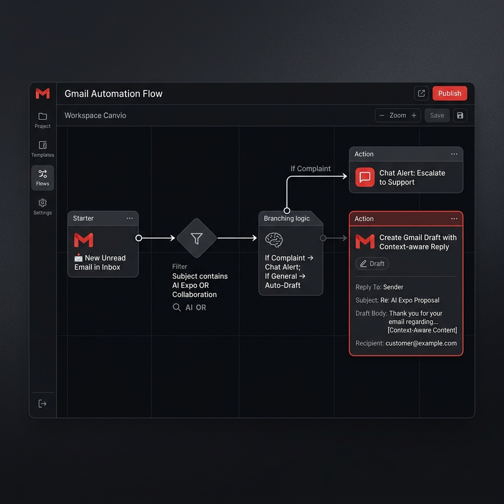

1. Mở bài: Tự động hóa – Giải thoát khỏi gánh nặng Email
Trong môi trường kinh doanh hiện đại, email không chỉ là công cụ giao tiếp mà còn là một "gánh nặng nhận thức" (Cognitive Load) khổng lồ. Mỗi ngày, một nhân viên văn phòng trung bình dành hơn 28% thời gian làm việc để xử lý hòm thư. Thách thức lớn nhất không phải là việc viết email, mà là việc nghiền ngẫm lại ngữ cảnh của các cuộc hội thoại cũ để đưa ra phản hồi chính xác.
Google Workspace Studio xuất hiện như một "kiến trúc sư" cho quy trình làm việc, cho phép bạn xây dựng các Agent tự động có khả năng tư duy. Thay vì phải copy-paste nội dung sang ChatGPT rồi dán ngược lại, hệ thống này tích hợp trực tiếp AI Reasoning vào luồng nhận thư, giúp chuẩn bị sẵn sàng các bản nháp chất lượng cao ngay khi email vừa chạm hộp thư đến. Đây không chỉ là tiết kiệm thời gian, mà là sự giải phóng để con người tập trung vào những quyết định chiến lược.
2. Kịch bản: AI Expo 2026 Follow-up
Hãy tưởng tượng bạn vừa kết thúc AI Expo 2026. Hàng trăm khách hàng tiềm năng gửi email hỏi về giải pháp "AI Quest" của bạn. Mỗi email có một nhu cầu riêng: người hỏi về giá, người hỏi về kỹ thuật, người muốn đặt lịch demo.
Hệ thống phải tự động nhận diện các email liên quan đến sự kiện, đọc hiểu thread hội thoại trước đó (nếu có), và soạn thảo một bản nháp phản hồi đầy đủ thông tin, mang tính cá nhân hóa cao.
3. Thiết lập chi tiết: Luồng vận hành 3 giai đoạn
Giai đoạn 1: Lọc Email "Actionable" (Filtering)
Bước đầu tiên là xác định chính xác "nguyên liệu" cho AI. Sử dụng Starter Gmail với query:
in:inbox is:unread -from:aiquest.com subject:("AI Expo" OR "Collaboration" OR "Báo giá")
Giai đoạn 2: Trình soạn thảo thông minh (Gemini Reasoning)
Đây là phần quan trọng nhất. AI không chỉ viết lách, nó phải suy luận dựa trên dữ liệu. Prompt tiếng Anh chuẩn hóa để đạt độ chính xác cao nhất:
"You are a professional Business Development Assistant. Analyze the provided email thread history. Your Task: Generate a contextual reply draft that: 1. Greets the sender and references the meeting at AI Expo 2026. 2. Summarizes previous discussions and addresses all technical/pricing questions. 3. Suggests a clear next action (e.g., a 15-minute demo call). 4. Includes 3 intelligent clarifying questions to ensure no information is missed. Tone: Professional, helpful, and concise. Constraint: DO NOT hallucinate facts not present in the thread."
Giai đoạn 3: Lưu trữ & Phân loại (Action)
Lưu kết quả vào Gmail Drafts và gán nhãn Draft-created để nhân viên dễ dàng nhận diện và kiểm duyệt.
4. Thân bài: Sức mạnh Suy luận của Gemini trong Gmail
Tại sao chúng ta cần Gemini thay vì các mẫu trả lời tự động truyền thống? Câu trả lời nằm ở khả năng "Thread Awareness" (Nhận thức luồng hội thoại). Một email phản hồi hiệu quả phải là sự tiếp nối của những gì đã trao đổi trước đó.
Khả năng Thấu hiểu Hội thoại (Context Integration)
Trong Workspace Studio, Gemini có khả năng truy cập vào đối tượng Thread history. Nó có thể phân biệt được khách hàng A đã đồng ý về giá nhưng đang băn khoăn về bảo mật, trong khi khách hàng B chỉ mới đang tìm hiểu sơ bộ. Các "Clarifying Questions" (Câu hỏi làm rõ) do AI tự sinh ra giúp bộ phận Sales bỏ qua các bước hỏi đáp vụn vặt và đi thẳng vào chốt deal.
Bảng đối soát chất lượng (Quality Gate)
| Statement in Draft | Snippet from Source Thread | Status |
|---|---|---|
| "Glad we met at booth #5" | "I visited your booth (#5) at the Expo..." | ✅ OK |
| "Regarding the API integration..." | "Does your system support REST API?" | ✅ OK |
| "Sending the Enterprise quote" | "Interested in Enterprise tier pricing." | ✅ OK |
| "Meeting next Tuesday morning" | "Let's catch up next Tuesday morning." | ✅ OK |
| "Noted your current CRM is Salesforce" | "We are currently using Salesforce..." | ✅ OK |
5. Demo Từng Bước: Tự động hóa Phản hồi Gmail
Quan sát luồng vận hành thực tế qua các ảnh mô phỏng UI dưới đây:
Sơ đồ kết nối giữa lọc email, suy luận Gemini và tạo bản nháp.

Dữ liệu được trích xuất và đối chiếu chính xác từ nội dung email gốc.

6. Xử lý Ngoại lệ: Khi nào AI cần lùi bước?
Sự an toàn trong vận hành là ưu tiên hàng đầu. Chúng ta thiết lập một nhánh logic riêng (Conditional Branching) để xử lý các vấn đề nhạy cảm.
Nếu tiêu đề hoặc nội dung email chứa từ khóa: Complaint, Legal, hoặc Negotiation.
Hành động: AI sẽ dừng việc tạo bản nháp. Thay vào đó, hệ thống gửi một Google Chat Alert đến quản lý cấp cao kèm link trực tiếp đến email để xử lý khẩn cấp.
7. Kết bài: Tương lai của Giao tiếp Doanh nghiệp
Việc triển khai hệ thống tự động tạo bản nháp Gmail không chỉ là một thủ thuật tiết kiệm thời gian; đó là sự thay đổi trong triết lý vận hành. Chúng ta đang tiến tới kỷ nguyên mà "AI làm nền, Con người làm điểm tựa". Khi các tác vụ lặp đi lặp lại được xử lý ở tốc độ mili giây, con người sẽ có đủ không gian và thời gian để kiến tạo những mối quan hệ khách hàng sâu sắc và chân thành hơn.
Hãy bắt đầu xây dựng Agent đầu tiên của bạn ngay hôm nay để trải nghiệm sự khác biệt mà Workspace Studio mang lại cho doanh nghiệp của bạn.